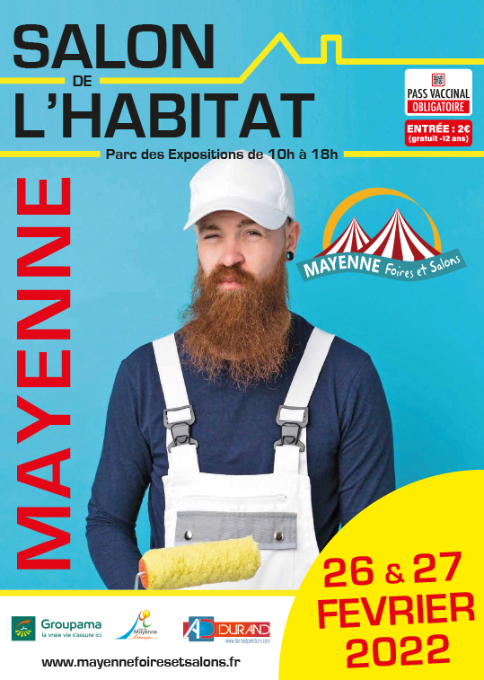

Créé en 2007, le Salon de l’Habitat a pour ambition d’inviter des exposants des différents secteurs de la construction, les professionnels de l’habitat, du jardinage, du loisir, de l’énergie et d’impliquer les collectivités locales : la ville de Mayenne, la Communauté de Communes et le Pays de la Haute-Mayenne et de donner la possibilité aux exposants de présenter leur savoir-faire afin de prendre un maximum de contacts sérieux et fructueux.
Mayenne Foires et Salons et ses bénévoles améliorent au fil des années la qualité des services, l’accueil, les infrastructures, les produits exposés pour recevoir au mieux nos visiteurs, et faire en sorte qu’ils trouvent une réponse à leurs besoins